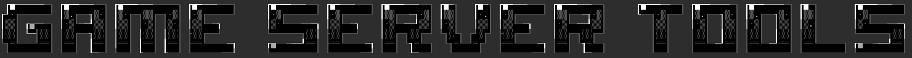

<!DOCTYPE html>
<html>
    <head>
        <meta charset='utf-8'>
        <meta http-equiv='X-UA-Compatible' content='IE=edge'>
        <title>Game Server Tools</title>
        <meta name='viewport' content='width=device-width, initial-scale=1'>
        <link rel='stylesheet' type='text/css' media='screen' href='./style/index.css'>
    </head>
    <body>
        <header></header>


        <!-- <section>
            
        </section>
        <section>
            <p>
                Cette page rassemble des outils et des informations permettant la mise en place, la gestion, et le modding de serveur de jeux.
                Tous les outils mis à disposition s’exécutent localement et ne nécessitent pas de connexion internet,
                toutefois une connexion internet sera nécessaire pour installer un serveur avec SteamCMD.
                Chacun des outils est compatible pour une utilisation sur un système Windows et linux.
            </p>
            <p>Outils disponibles:</p>
            <ul>
                <li>Installation de SteamCMD.</li>
                <li>Installation de serveur via SteamCMD.</li>
                <li>Modder un server.</li>
            </ul>
        </section> -->


        <script src='./index.js' type="module"></script>
    </body>
</html>